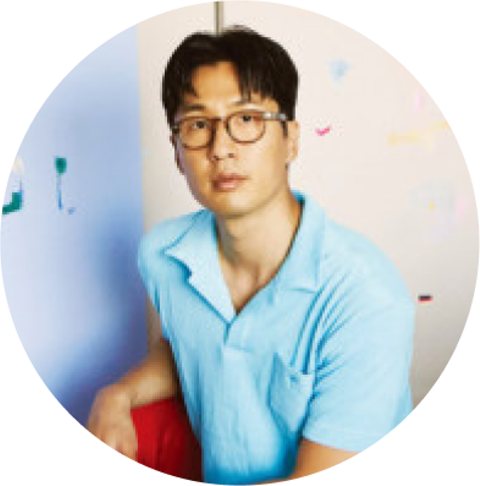

김종영미술관 (kimchongyung.com) 서울 종로구 평창32길 30 10:30 ~ 18:30, 월요일 휴무
티켓 구매하기
참여작가
노순천 Soon chen no 드로잉과 조각, 평면과 입체의 경계를 허무는 작가

마이큐 MY Q 음악과 미술의 장르를 넘나들며 작업하는 작가
임정주 jung joo Im 공예가로 시작해 설치와 조각의 순수예술의 작가
전시개요
김종영미술관 특별기획전《어떤 변화: Metamorphosis》는 기질로부터 발현된 각자의 존재 방식에 대해 물음을 던지는 전시입니다.
우리는 같은 것을 맞닥뜨렸을 때 각자의 성격과 기질이 반영된 다른 형태의 반응을 일으킵니다.
일반적으로 이것을 개인의 존재감을 나타내는 개성이라 표현합니다.
이번 전시에 참여한 작가들의 작업은 이처럼 자신만의 개성이 강하게 녹아있는 각자의 존재방식을 가지고 있는 것들입니다.
과연 그들의 독특한 개성이 어디에서 온 것인지 탐구적 시선으로 바라보았습니다.